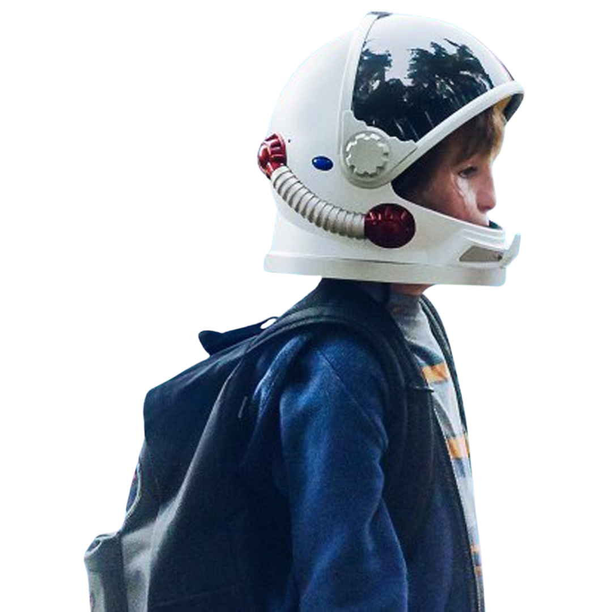

เมื่อต้องเลือกระหว่าง
ความถูกต้องกับความเมตตา
จงเลือกความเมตตา

เมื่อต้องเลือกระหว่าง
ความถูกต้องกับความเมตตา
จงเลือกความเมตตา
หนังสือมีการเล่าเรื่องผ่านตัวละครหลากหลาย
เพื่อสะท้อนให้เห็นความรู้สึกและมุมมองของตัวละครที่หลากหลาย
เด็กชายผู้น่ารัก ฉลาด ที่ต้องเผชิญหน้ากลับสายตาและการกลั่นแกล้งในโรงเรียน
พี่สาวที่คอยปกป้องน้องชาย ในขณะเดียวกันก็แอบน้อยใจที่พ่อแม่ทุ่มเทความสนใจไปที่น้องชาย
เพื่อนสนิทใจดีที่เลือกมานั่งกับออกัสต์ด้วยความจริงใจ ไม่ใช่เพราะสงสาร
เพื่อนคนแรกในโรงเรียนของออกัสต์ที่เคยทำผิดพลาดแต่สุดท้ายก็เลือกยืนกยัดเคียงข้างออกัส
เรื่องราวของ ออกัสต์ ที่ผู้คนมองว่าเขาเป็น "ตัวประหลาด" ทำให้ทุกครั้งที่ต้องออกนอกบ้านมักจะสวมหมวกนักบินอวกาศไว้เสมอเพื่อซ่อนใบหน้าและปกป้องความรู้สึกของตัวเอง จุดเปลี่ยนสำคัญเกิดขึ้นเมื่อครอบครัวตัดสินใจส่งเขาเข้าโรงเรียนเป็นครั้งแรกในระดับเกรด 5 นี่คือการก้าวออกจากพื้นที่ปลอดภัยไปสู่โลกภายนอกที่ทำให้เขาต้องเผชิญกับการถูกกลั่นแกล้ง และความเหงาโดดเดี่ยว ทว่าในขณะเดียวกัน การเปิดประตูสู่โลกใหม่นี้ก็ทำให้เขาได้พบกับมิตรภาพที่แท้จริง ได้เรียนรู้ที่จะเติบโตและเข้าใจชีวิต เช่นเดียวกับครอบครัวและเพื่อนๆ รอบตัวเขา ที่ต่างก็ได้เรียนรู้ แข็งแกร่งขึ้น และเติบโตไปพร้อม ๆ กับการก้าวออกจากบ้านครั้งแรกของออกัสต์
ข้อคิดสำคัญจากเรื่อง Wonder สะท้อนให้เห็นว่า "ความใจดีและความเข้าใจ" คือพลังอันยิ่งใหญ่ที่สามารถเปลี่ยนแปลงโลกของคนๆ หนึ่งได้ โดยเฉพาะข้อคิดประทับใจอย่าง “เมื่อต้องเลือกระหว่างการเป็นฝ่ายถูก กับการเป็นคนจิตใจดี ให้เลือกความจิตใจดีเสมอ” ซึ่งเตือนสติเราว่าการตัดสินหรือโต้เถียงเพื่อเอาชนะอาจไม่ได้ช่วยสร้างคุณค่าใดๆ เท่ากับการหยิบยื่นความเห็นอกเห็นใจให้แก่กัน เรื่องราวของ ออกัสต์สอนให้เราตระหนักว่า รูปลักษณ์ภายนอกเป็นเพียงเปลือกนอกที่ไม่ควรถินำมาใช้ตัดสินคุณค่าของใคร เพราะเนื้อแท้ที่ซ่อนอยู่ภายใน ทั้งความเฉลียวฉลาด อารมณ์ขัน และจิตใจอันบริสุทธิ์ต่างหากคือสิ่งที่งดงามอย่างแท้จริง ขณะเดียวกัน เรื่องนี้ยังทำให้เห็นว่าทุกคนรอบตัวต่างก็กำลังต่อสู้กับปัญหาและความยากลำบากในรูปแบบของตัวเอง ไม่ว่าจะเป็นความรู้สึกถูกลืมของพี่สาว หรือความกดดันในการเข้าสังคมของเพื่อนๆ ดังนั้นการมองผู้อื่นด้วยความเมตตาและไม่ตัดสินใครเร็วเกินไปจึงเป็นสิ่งจำเป็น ที่สำคัญที่สุดคือ บทเรียนเรื่องความกล้าหาญในการก้าวออกจากพื้นที่ปลอดภัของออกัสต์ ที่ยอมถอดหมวกอวกาศเพื่อเผชิญหน้ากับสายตาคนทั้งโลก และบทบาทของครอบครัวกับมิตรภาพแท้จริงที่เป็นเสมือนเกราะป้องกัน คอยโอบอุ้มและผลักดันให้เขาก้าวผ่านความโดดเดี่ยว จนกลายมาเป็นแรงบันดาลใจที่เปลี่ยนแปลงหัวใจของผู้คนรอบข้างให้เติบโตและงดงามไปพร้อมกัน
